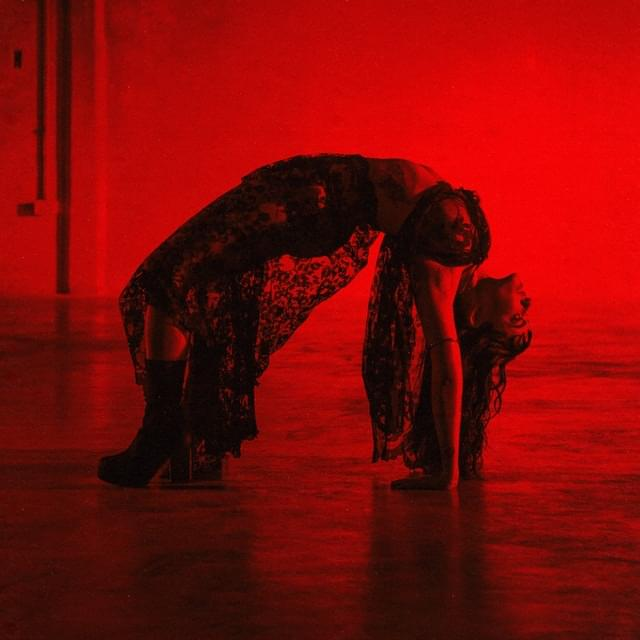

Compositora, productora e intérprete, Juana es una referente de la escena musical emergente.
Nacida en Buenos Aires, comenzó su carrera musical en bandas locales antes de lanzarse como solista en 2019, proponiendo una estética visual gótica y vanguardista.
Desde que comenzó a hacer música Juana se metió de lleno en la producción, explorando con géneros que iban desde el pop y el R&B, hasta la música electrónica y experimental.
Actualmente cuenta con dos discos y dos EP.